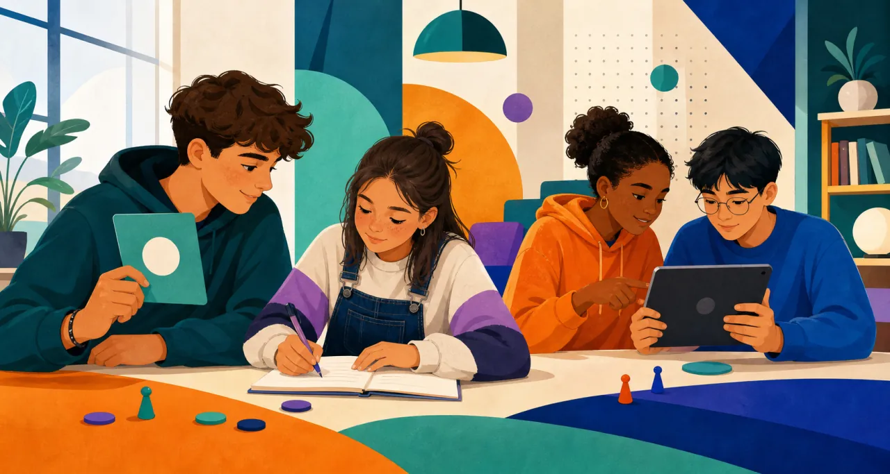

Cross-age Peer Tutoring · Prototipo 2026–2027
Insieme nella prima SSAS
Gli alunni di prima lavorano con tutor delle classi terze, quarte e quinte per conoscere la scuola, imparare a studiare insieme e chiedere aiuto nel modo giusto.
3 incontri
120 minuti ciascuno
Alunni di prima + tutor di III, IV e V
Prototipo didattico · laboratorio di avvio
Esempi e sfide tra coppie
Nessun voto

Le risposte vengono salvate soltanto su questo dispositivo e separate mediante classe e codice coppia. Il codice non è una password: non inserire nomi, fotografie, email, dati sanitari o racconti personali.
Prima di iniziare
Come usare gli aiuti
Incontro 1
Incontro 2
Incontro 3
Attività online
Schede
Area docente
Tracce del lavoro raccolte
0/22
Indica soltanto quante produzioni sono state documentate: non è un voto e non misura da solo l'apprendimento.